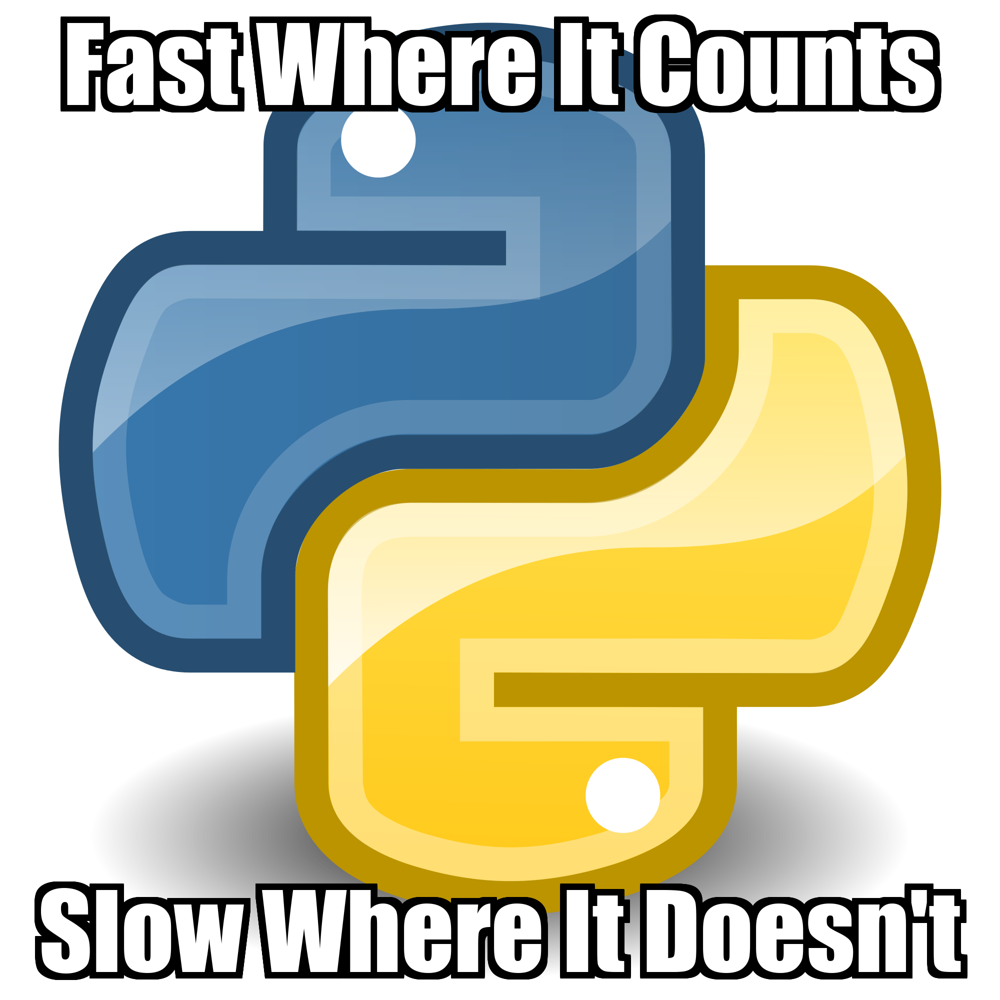
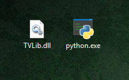

TVLib: A C++ Text Vectorization Library with Python Bindings
Mon, 09 Jul 2018
C++, Computer Science, Data Science, Machine Learning, Nlp, Python, Sklearn, Software, Sparse Matrices
I am a big fan of the
CountVectorizer class in
scikit-learn [1]. With a robust and easy interface that produces (sparse!) matrices, what’s not to love? Well, it’s… pretty… slow…
The performance is okay for 10s of MB of text, but GBs take minutes or more. It terms out that
CountVectorizer is implemented in pure Python. The functions are single threaded too. It seems like low-hanging fruit. Just whip up some parallel C++, right? Well, not quite, but I’m getting ahead of myself.
Problem Setup
A basic approach to the problem is to create a regular expression tokenizer, iterate over the terms, and use a map to count occurrences. My original approach used
std::regex_iterator to tokenize the document. Much to my surprise,
re in Python is much faster than
std::regex_iterator.
What?! Just parsing the text with a
regex_iterator was slower than the entire
fit_transform operation from
sklearn.
I guess Python’s slogan could be something like:

Python: Fast where it counts. Slow where it doesn’t.
Instead of admitting defeat, I (stubbornly) implemented a small finite state machine (FSM) parser for the default regex pattern in
sklearn:
\w\w+. Now, just parsing the text was around 10 times faster than
fit_transform. Onto the hard part.
The problem has a few wrinkles that make it challenging. Unique terms need to be mapped to unique indices. Right away this makes some synchronization necessary. Parsing through text with the FSM is an \(\textbf{O}(n)\) operation. Most of the work involves obtaining an index for each term. This is map lookup. Since all threads need to use this map to lookup and update it is a highly contentious resource. Indeed, a naïve multi-threaded approach is doomed to be much slower than a single threaded one.
The Approach
To reduce contention, two tools can be used: reader/writer locks and multiple maps/locks. The principal of the first is that lookups can be done in parallel; exclusive access is only needed when updating the map. There is a class
std::shared_mutex which does just this. This was, again, slower than a trivial implementation using
std:mutex.
What?! And again, instead of admitting defeat, I (stubbornly) implemented a basic reader/write lock using
std::mutex and
std::atomic.
The principal of the second is to use multiple maps and locks and use a secondary mapping strategy to uniquely assign terms to maps. The strategy used is:
(sum of character in term) % NUM_MAPS
Since a word is always assigned to the same map, it is guaranteed to only be in one place. To make sure the index is unique, each map maintains its own counter \(j\) and the final index is:
\((j << k)\ |\ i\) ,
where \(j\) is the term index for the map, \(k\) is the number of bits in the binary representation of
NUM_MAPS, and \(i\) is the index of the map. In this way, terms are uniquely assigned to maps. When producing the final matrix, the above equation is undone so that the optimal number of columns is constructed. If this is not done, the number of columns in the matrix is inflated by a factor of \(2^{k}\).
The Result
The main body of the loop is shown in the following code block. The index of the map and lock are computed in the same function that performs tokenization:
Sit.NextP. With the map and lock identified, the rest is using a reader/writer lock to obtain/update the index.
CVIter SIt(SP[i], SL[i]);
while(SIt.NextP(j1, j2, LockInd)) {
LockInd %= NLOCK; //Basic hash function for index of map/lock to use (LockInd)
uint SLen = j2 - j1; //Length of current term
if(SLen == 0)
continue;
char* Term = SP[i] + j1; //CVIter will make sure this is null-terminated
RWMutex& RWLock = Locks[LockInd]; //Mutex lock to use based on word
DMap& M = MM[LockInd]; //Map to use based on word
ull I; //Column index of term
RWLock.ReadLock(); //Lock map specific to this word
auto It = M.find(Term); //Find index if it exists in map
if(It == M.end()) { //Term is not in map; need to try and add it
RWLock.ReadUnlock(); //Avoid deadlock; The race condition is handled by using emplace
RWLock.WriteLock(); //Get write access; it is possible another thread beat current one and added same term here
auto Pair = M.emplace(Term, TIndex[LockInd]); //Only map Term->TIndex[LockInd] if Term does not exist
TIndex[LockInd] += Pair.second; //Only increment if Term was actually added (see race condition above)
RWLock.WriteUnlock(); //Done writing
I = Pair.first->second; //Map cells are never modified only created; Safe to do this outside of lock
}
else {
RWLock.ReadUnlock(); //Cell is never modified only created
I = It->second; //Map cells are never modified only created; Safe to do this outside of lock
}
MR[(I << NLEXP) | LockInd]++; //Bottom portion of word index is map number
Some care is needed since C++ doesn’t have a built in upgradable reader/writer lock. There is a race condition between
ReadUnlock and
WriteLock. If another thread reached
WriteLock before the current and went to update the index for the same term, then the index might become off by one. A rare situation, but possible nonetheless. The condition is handled by using emplace instead of something like this:
//Not like this!
M[Term] = TIndex[LockInd];
TIndex[LockInd]++;
The race condition still exists, but at worst it results in a wasted
emplace operation.
Integrating the Result
I use the
mingw-w64 toolchain to build most C++ on my (Windows) system (it works great for CGo!) [2]. I decided to compile the result as a DLL and then call the exported functions in Python using
ctypes. The interface for the DLL shown in the following code block. The
extern "C" prevents name mangling making it easier to reference the function in Python.
#ifndef TVLIB_H
#define TVLIB_H
#include "Consts.h"
#ifdef TVLIB_EXPORT
#define TVLIB_API __declspec(dllexport)
#else
#define TVLIB_API __declspec(dllimport)
#endif
/** Vectorize an array of strings
* SF: String array
* SL: String lengths (rows)
* LSA: Length of string array
* RLen: Result length
* ret: Pointer to array like
*/
extern "C" TVLIB_API ull* __cdecl Vectorize(char** SF, uint* SL, uint LSA, uint& RLen);
/** Vectorize a numpy array of strings
* SF: String array (flat)
* RL: Row length of flat array
* SL: String lengths (without padding)
* LSA: Length of string array
* RLen: Result length
* ret: Pointer to array like
*/
extern "C" TVLIB_API ull* __cdecl VectorizeF(char* SF, uint RL, uint* SL, uint LSA, uint& RLen);
// Frees the vector allocated on the last call to Vectorize
extern "C" TVLIB_API void __cdecl Cleanup();
#endif
The following script is a batch script to compile the DLL. Oh yeah, I’m calling the library
TVLib for
Text
Vectorization
Library.
@Echo off
g++ -Wall -O3 -c -DTVLIB_EXPORT TVLib.cpp
g++ -shared -o TVLib.dll TVLib.o -Wl,--out-implib,TVLib.lib
Now comes the fun part of figuring out how to pass managed Python objects into native C++. The
ctypes library provides functions for loading DLLs and creating C data types. The tricky part is figuring out what the raw memory looks like so that it can be used properly in C++.

Okay… Now What?
It turns out that a
numpy array of strings is a 2D (conceptually) block of memory. Each row has a fixed length determined by the longest string in the array. The datatype, something like
|S22, indicates a string array with 22 columns. Not quite as convenient as a
char**, but a little pointer magic can fix that. Instead of
Array[i][j],
Array + i * NUM_COL + j is used.
import os
import numpy as np
from scipy.sparse import coo_matrix as COOMat
from ctypes import CDLL, POINTER, byref, c_char, c_ulonglong, c_uint
def TVectorize(A, AL = None, copy = True):
'''Vectorizes a document using term frequencies
A: A numpy array of the sentences to vectorize
AL: The lengths of the sentences in characters
ret: A COO Matrix rows corresponding to sentences,
columns to terms, and entries to counts.
'''
global VecF, CleanF
if AL is None:
AL = np.vectorize(len)(A)
#Convert arguments to C++ data types
ARL = c_uint(A.nbytes // A.size)
AP = A.ctypes.data_as(POINTER(c_char))
ALP = AL.ctypes.data_as(POINTER(c_uint))
LSA = c_uint(A.shape[0])
RLen = c_uint(0)
#Call the C++ function and convert result to COO
R = VecF(AP, ARL, ALP, LSA, byref(RLen))
nr = np.ctypeslib.as_array(R, (RLen.value,)).reshape(-1, 3)
SM = COOMat((nr[:, 2], (nr[:, 0], nr[:, 1])), copy = copy)
return SM
dllPath = os.path.join(os.path.dirname(__file__), 'TVLib.dll')
Dll = CDLL(dllPath) #Load DLL from same path as code path (be careful)
VecF = Dll.VectorizeF #Function for flat numpy arrays
VecF.argtypes = [POINTER(c_char), c_uint, POINTER(c_uint), c_uint, POINTER(c_uint)]
VecF.restype = POINTER(c_ulonglong)
The above code block, gives the Python wrapper for the DLL. The remainder is just construction a
scipy.sparse.coo_matrix from the result of the C++ function.
Benchmarking the Result
My benchmark for the program was the sentences from the Stanford NLP dataset: a collection of sentences and their corresponding audio [3]. The audio was not used; it was just what I had on hand in a nice format. The text document is ~ 28.7MB. Table 1 shows the results on my system: a dual Intel Xeon X5675 @ 3.07 GHz.
| Library | Avg. Runtime | Std. Runtime |
|---|
| sklearn | 8.435 | 0.354 |
| TVLib | 0.509 | 0.008 |
Table 1: Runtime Results for Benchmark (Seconds)
On this benchmark, TVLib is \(8.435 / 0.509 = 16.572\) times faster than
sklearn. Granted, the library comes with a few caveats as of this writing (I will hopefully fix these things):
- Unicode is not supported
- Only one regex pattern is supported
Strings need to be null-terminated (Fixed!)
Number 3 can be fixed by explicitly specifying the datatype when creating the original
numpy array to be 1 character longer than the string with the longest length. Only the longest string is missing a null.
Conclusion
This project caused me to reconsider the reputation C++ has for being so performant. The fundamentals are fast, but many of the day-to-day data structures in the standard library come at a heavy cost. The language is also starting to remind me of Frankenstein. Nonetheless, the result is an order of magnitude faster than the
sklearn. The full source code is
on my GitHub [4]. Enjoy and please make pull requests.
References
| [1] | Scikit-learn: Machine Learning in Python, Pedregosa et al., JMLR 12, pp. 2825-2830, 2011. |
| [2] | https://mingw-w64.org/doku.php |
| [3] | Learning Spatial Knowledge for Text to 3D Scene Generation. Angel Chang, Manolis Savva, and Christopher D. Manning. In Proceedings of the 2014 Conference on Empirical Methods in Natural Language Processing (EMNLP 2014). |
| [4] | https://github.com/nicholastoddsmith/TVLib |